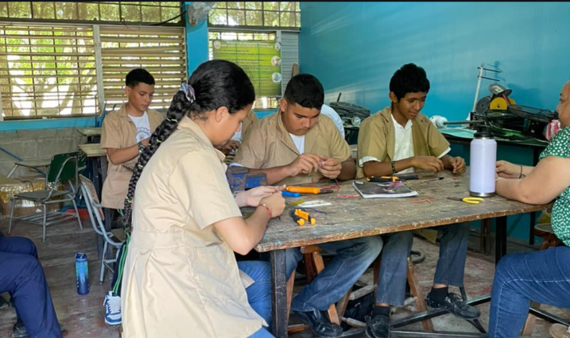
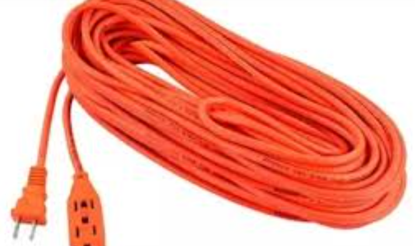
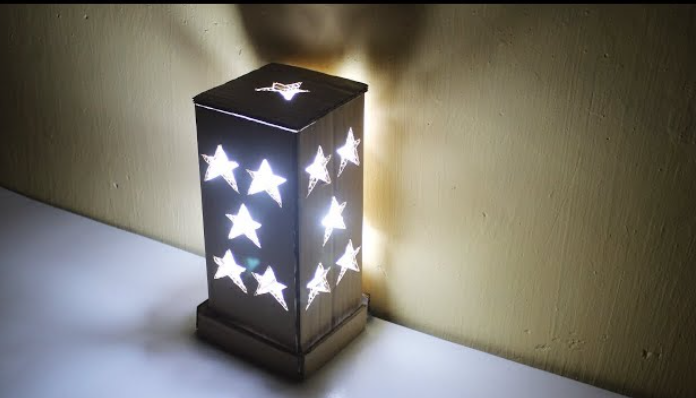
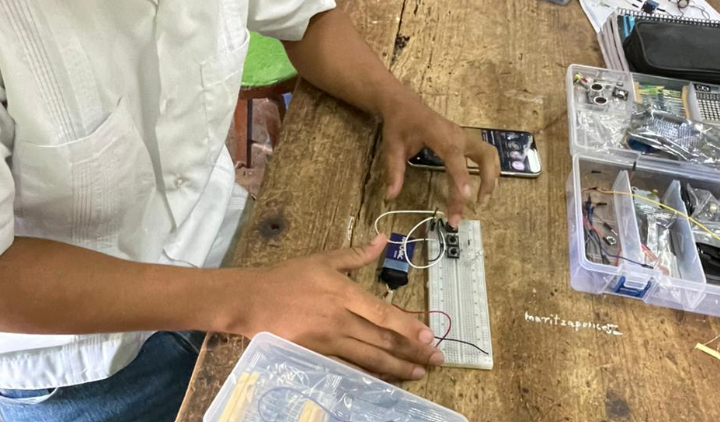

El taller de Electricidad para el Tercer Ciclo introduce a los alumnos de forma dinámica, creativa y sumamente segura en el mundo de la energía. En esta etapa, el aprendizaje es completamente práctico y adaptado a su edad, enfocándose en el desarrollo de la motricidad fina y el pensamiento lógico a través de proyectos manuales.
Los estudiantes aprenden desde cero el uso correcto de herramientas básicas, la importancia del aislamiento y las normas de seguridad fundamentales. Mediante la construcción de sus propias extensiones, lámparas decorativas y maquetas eléctricas, descubren la utilidad de la electricidad en la vida cotidiana, despertando su ingenio y dándoles habilidades prácticas aplicables en sus propios hogares de manera responsable.

Conocimiento inicial del espacio de trabajo y las reglas de oro para evitar accidentes. Los alumnos aprenden a identificar y manipular de manera correcta herramientas de mano indispensables como el alicate, la tenaza pelacables y los destornilladores aislados.
Una de las primeras prácticas reales donde los estudiantes construyen extensiones monofásicas (tanto normales como reforzadas). Aprenden a empalmar cables de manera firme, a fijar correctamente los conductores a los tornillos de enchufes y tomacorrientes aéreos, y a usar cinta aislante con precisión.


Proyecto estrella donde se une la creatividad con la técnica. Los jóvenes diseñan la estructura de una lámpara de mesa o de noche utilizando materiales reciclados, madera o tubos, y realizan toda la instalación eléctrica interna: desde el enchufe, pasando por el interruptor de cordón o de paso, hasta la roseta (plafón).
Montaje experimental sobre tablas de madera pequeñas donde los chicos simulan de manera segura el cableado de una habitación. Conectan circuitos de un foco controlado por un interruptor simple y agregan tomacorrientes básicos, entendiendo cómo viaja la corriente eléctrica.

Docente especialozada en el area de Electricidad,docente decidida a enseñar y guiar a los estudiantes de el area de Electricidad.